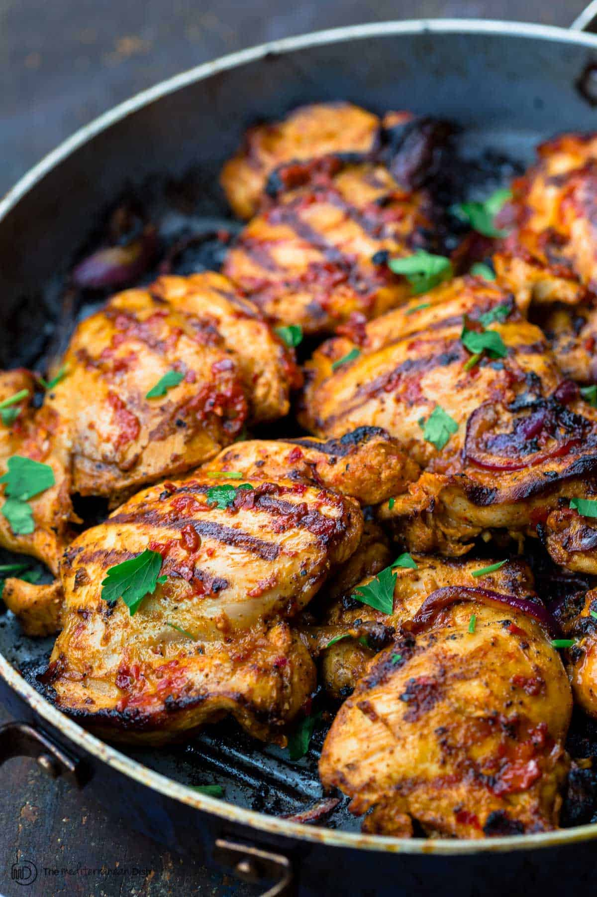

Grilled Chicken Recipe

Description
Whether you keep them on hand for quick lunches or serve them for dinner tonight,
a juicy Grilled Chicken Breast is the perfect way to upgrade any meal.
Mastering the art of preparing a perfectly grilled chicken breast will make you feel like
a has-her-life-together grown-up.
Ingredients
- 1 3/4 pounds boneless, skinless chicken breasts about 3 medium breasts
- 1 batch best Chicken Marinade*
- Chopped fresh herbs crumbled feta cheese, a squeeze of lemon juice, optional for serving
- Oil for grilling
Instructions
- Place the chicken breasts on a cutting board (leave several inches between them and work in batches as needed).
Cover with plastic wrap to keep things tidy, and with a meat mallet, rolling pin, or your fist, pound the chicken to an even thickness.
It doesn't need to be ultra thin—just make sure the middle is fairly even with the ends (the chicken should be about 1/2-inch thick).
- With a fork, poke holes all over the chicken (this will allow the marinade to absorb).
- In a large ziptop bag, combine the marinade ingredients, then add the chicken.
- Meat and marinade in a plastic bag
Seal the bag to evenly coat the chicken with the marinade.
Place in a pan or bowl to catch any drips. Let the chicken marinate at room temperature for at least 30 minutes,
or refrigerate it to marinate for up to 12 hours (5 to 6 hours is ideal). Even 15 minutes is better than nothing!
- When ready to grill, preheat the grill to high (475 degrees F). If your chicken has been in the refrigerator,
remove it and allow it to come to room temperature for at least 10 minutes. Clean and oil the grates.
- Place the chicken on the grill presentation (smooth) side down, shaking off any excess marinade.
Cover the grill and let cook for 4 to 5 minutes on the first side, then flip. The chicken should lift easily off the grill;
if it sticks, allow it to cook another minute or two.
Three chicken breasts on the grill
- Recover the grill and cook for an additional 4 to 8 minutes. Chicken is considered done at 165 degrees F.
I like to remove chicken from the grill around the 155-160 degree F mark and allow it to finish cooking while resting.
DO NOT OVERCOOK, or your chicken will be dry.
- Place the chicken on a plate and let rest for at least 5 minutes (resting is mandatory!).
Add any desired toppings or sauces. Enjoy!